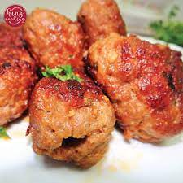

Gola Kabab

Gola Kabab
Traditionally gola kabab are made out of beef mince. I used the 80/20 beef mince to make these. Another popular option is chicken mince to make these kababs. However, you can use any type of minced meat as long as the spices remain consistent.
Go Back